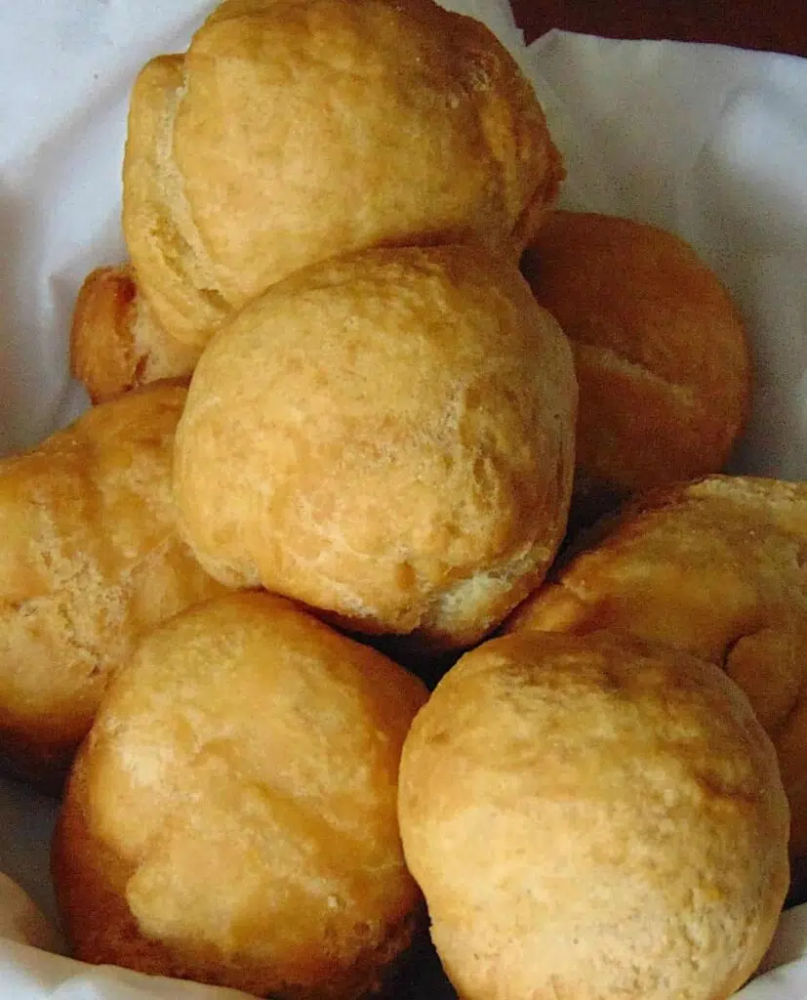

Jamaican Fry Dumplin

Lovely Jamaican fried dumplings, the ultimate side dish
This is the dish you would like to prepare to top off a wonderful Jamaican Jerk Chicken meal. Jamaican fried dumplings are soft, succulent, and melt like butter in your mouth.
Ingredients
- 4 cups all-purpose flour
- 2 teaspoons baking powder
- 1 ½ teaspoons salt
- ½ cup butter, cut into cubes and softened
- ½ cup cold water
- 1 cup vegetable oil for frying
Steps
-
Mix flour, baking powder, and salt together in a large bowl. Rub in butter until the mixture is crumbly. Mix in water, 1 tablespoon at a time, to form a firm dough; knead briefly.
-
Heat oil in a large heavy skillet over medium heat.
-
Break off pieces of dough and shape them into biscuit-like patties. Place just enough of the dumplings into the hot oil so they are not crowded; fry until golden brown, about 3 minutes per side. Remove from the pan and drain on paper towels before serving.